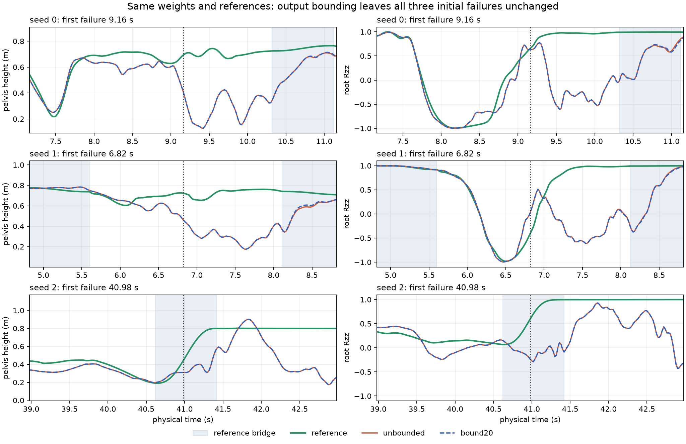

历史实验快照 · 保留原有数值、失败项与固定分母。视频为完整时长的网页播放副本；原始文件哈希描述本地原件。整体目标尚未完成。
同一组权重：输出限幅是否解决失败？
返回三阶段完整报告 · 首轮冻结方案 · 原始参考与连续序列扩展方案
受控变量：只将采集阶段已有的 ±20 输出界限用于部署。权重、原始/校准参考、物理配置、奖励和门槛均保持。这里是独立控制器变体的 CPU 对照；没有训练更新，也没有该变体的 CUDA 评测。动作值是关节目标归一化前的策略输出，不是力矩或弧度。所有评测零重置，失败后保留完整尾段。
完整分组与严格验收
首次失败与超限的先后关系
表格列出每一项首次失败。超限若在首次失败之后，不能解释该次初始失败。早于失败也不证明因果，需要看同权重干预的结果。状态差异阈值是 1e-5。
下图包括全部三条固定序列的首次失败窗口。完整120秒轨迹与视频另行保留；局部窗口用于定位失败。

全部 55 条校准参考对照与原始新 15 条
固定三条 120 秒序列：原始与校准参考
全部变体视频（含失败尾段）
转场参考与下一步的边界
完整账本与观测计数